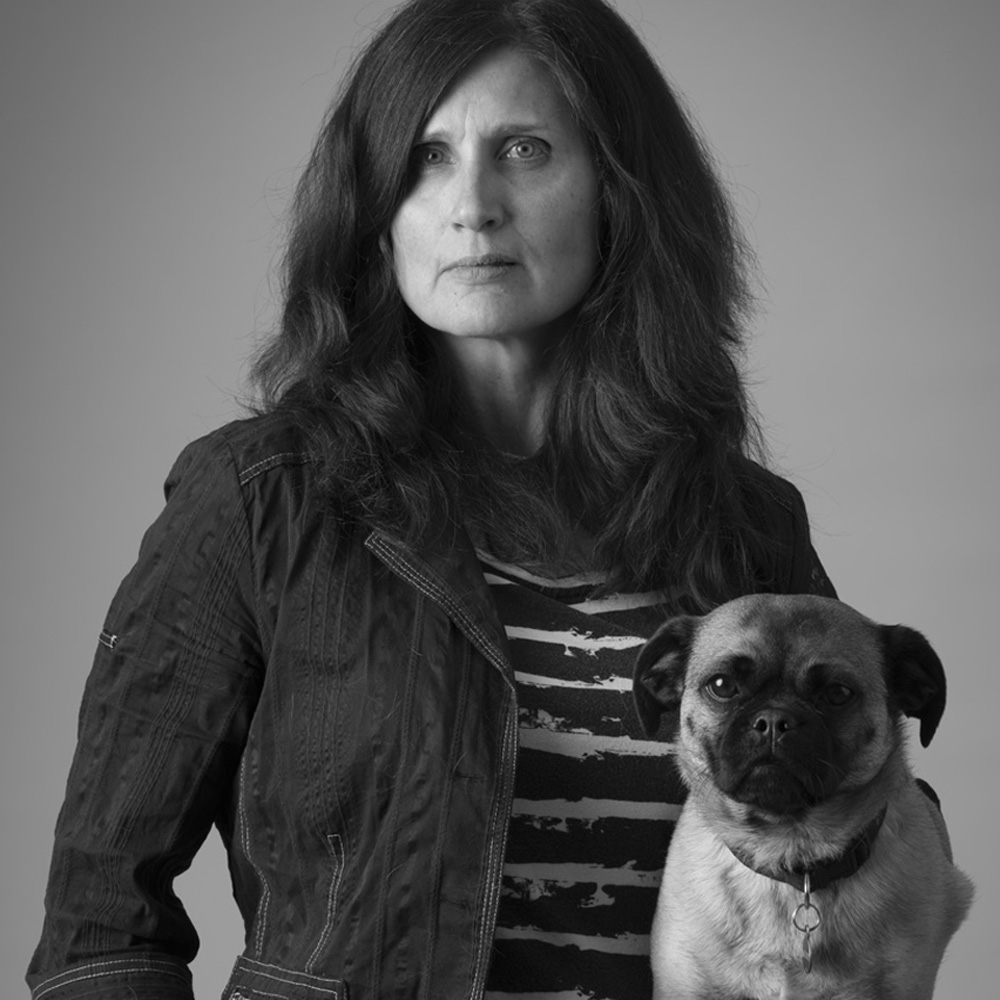
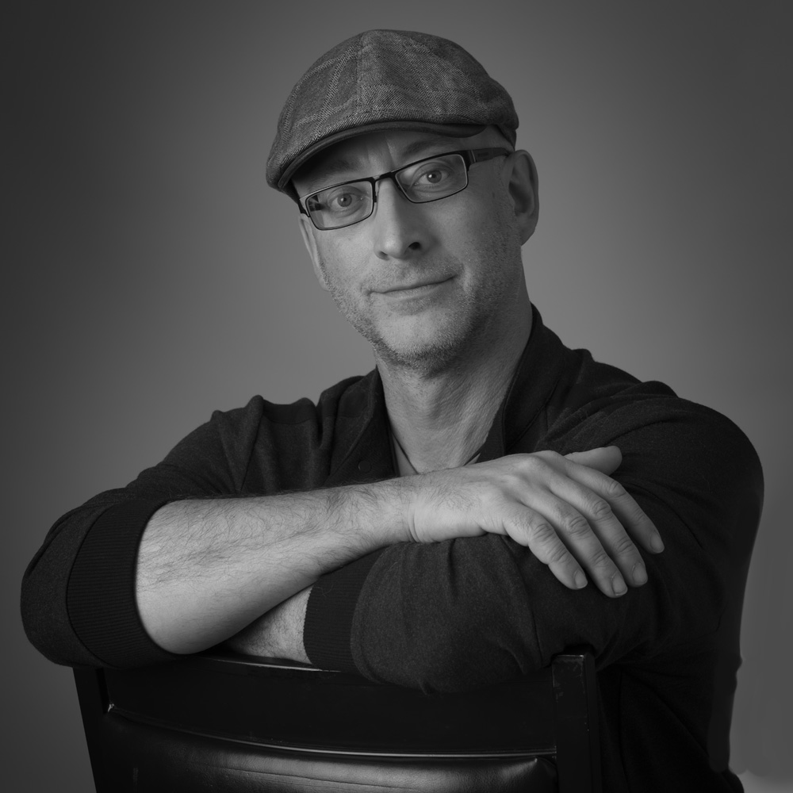

Katinka & Yannick's
Faces of Hudson
about us
We are Katinka and Yannick - partners in life who live in Hudson, Quebec. We met in the darkroom at Dawson College in 1993 and have worked together as professional photographers ever since. When we had an opportunity to participate in a photography show in 2018, we decided right away that we wanted to make black-and-white portraits of people from Hudson. This marked the beginning of our ongoing Faces of Hudson project. For us, it is a memorable experience to photograph so many fascinating people, to hear their stories and to learn about their connections to Hudson. We are aiming for a total of 100 portraits of some of the wonderful people who call Hudson their home.
EMAIL US


Faces of Hudson © 2022